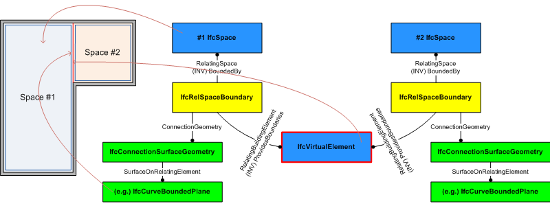
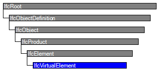

Natural language names
 | Virtuelles Element |
 | Virtual Element |
 | Élément virtuel |
| Virtuelles Element |
| Virtual Element |
| Élément virtuel |
| Item | SPF | XML | Change | Description | IFC2x3 to IFC4 |
|---|---|---|---|---|
| IfcVirtualElement | ||||
| OwnerHistory | MODIFIED | Instantiation changed to OPTIONAL. | IFC4 Addendum 1 | |
| IfcVirtualElement | ||||
| HasCoverings | ADDED |
A virtual element is a special element used to provide imaginary boundaries, such as between two adjacent, but not separated, spaces. Virtual elements are usually not displayed and does not have quantities and other measures. Therefore IfcVirtualElement does not have material information and quantities attached.
NOTE The main purpose of IfcVirtualElement is the provision of a virtual space boundary. The IfcVirtualElement may provide the 2D curve or 3D surface representation of the virtual space connection and is referenced by two instances of IfcRelSpaceBoundary, each pointing to one of the two adjacent IfcSpaces.
The IfcVirtualElement is mainly used to define a virtual boundary between two spaces. Figure 178 describes how to use IfcRelSpaceBoundary in conjunction with IfcVirtualElement to define space boundaries.
 |
Figure 178 — Virtual element space boundaries |
HISTORY New entity in IFC2x2 Addendum.
IFC2x2 CHANGE The entity IfcVirtualElement has been added. Upward compatibility for file based exchange is guaranteed.

| # | Attribute | Type | Cardinality | Description | C |
|---|---|---|---|---|---|
| IfcRoot | |||||
| 1 | GlobalId | IfcGloballyUniqueId | [1:1] | Assignment of a globally unique identifier within the entire software world. | X |
| 2 | OwnerHistory | IfcOwnerHistory | [0:1] |
Assignment of the information about the current ownership of that object, including owning actor, application, local identification and information captured about the recent changes of the object,
NOTE only the last modification in stored - either as addition, deletion or modification. | X |
| 3 | Name | IfcLabel | [0:1] | Optional name for use by the participating software systems or users. For some subtypes of IfcRoot the insertion of the Name attribute may be required. This would be enforced by a where rule. | X |
| 4 | Description | IfcText | [0:1] | Optional description, provided for exchanging informative comments. | X |
| IfcObjectDefinition | |||||
| HasAssignments | IfcRelAssigns @RelatedObjects | S[0:?] | Reference to the relationship objects, that assign (by an association relationship) other subtypes of IfcObject to this object instance. Examples are the association to products, processes, controls, resources or groups. | X | |
| Nests | IfcRelNests @RelatedObjects | S[0:1] | References to the decomposition relationship being a nesting. It determines that this object definition is a part within an ordered whole/part decomposition relationship. An object occurrence or type can only be part of a single decomposition (to allow hierarchical strutures only). | X | |
| IsNestedBy | IfcRelNests @RelatingObject | S[0:?] | References to the decomposition relationship being a nesting. It determines that this object definition is the whole within an ordered whole/part decomposition relationship. An object or object type can be nested by several other objects (occurrences or types). | X | |
| HasContext | IfcRelDeclares @RelatedDefinitions | S[0:1] | References to the context providing context information such as project unit or representation context. It should only be asserted for the uppermost non-spatial object. | X | |
| IsDecomposedBy | IfcRelAggregates @RelatingObject | S[0:?] | References to the decomposition relationship being an aggregation. It determines that this object definition is whole within an unordered whole/part decomposition relationship. An object definitions can be aggregated by several other objects (occurrences or parts). | X | |
| Decomposes | IfcRelAggregates @RelatedObjects | S[0:1] | References to the decomposition relationship being an aggregation. It determines that this object definition is a part within an unordered whole/part decomposition relationship. An object definitions can only be part of a single decomposition (to allow hierarchical strutures only). | X | |
| HasAssociations | IfcRelAssociates @RelatedObjects | S[0:?] | Reference to the relationship objects, that associates external references or other resource definitions to the object.. Examples are the association to library, documentation or classification. | X | |
| IfcObject | |||||
| 5 | ObjectType | IfcLabel | [0:1] |
The type denotes a particular type that indicates the object further. The use has to be established at the level of instantiable subtypes. In particular it holds the user defined type, if the enumeration of the attribute PredefinedType is set to USERDEFINED.
| X |
| IsDeclaredBy | IfcRelDefinesByObject @RelatedObjects | S[0:1] | Link to the relationship object pointing to the declaring object that provides the object definitions for this object occurrence. The declaring object has to be part of an object type decomposition. The associated IfcObject, or its subtypes, contains the specific information (as part of a type, or style, definition), that is common to all reflected instances of the declaring IfcObject, or its subtypes. | X | |
| Declares | IfcRelDefinesByObject @RelatingObject | S[0:?] | Link to the relationship object pointing to the reflected object(s) that receives the object definitions. The reflected object has to be part of an object occurrence decomposition. The associated IfcObject, or its subtypes, provides the specific information (as part of a type, or style, definition), that is common to all reflected instances of the declaring IfcObject, or its subtypes. | X | |
| IsTypedBy | IfcRelDefinesByType @RelatedObjects | S[0:1] | Set of relationships to the object type that provides the type definitions for this object occurrence. The then associated IfcTypeObject, or its subtypes, contains the specific information (or type, or style), that is common to all instances of IfcObject, or its subtypes, referring to the same type. | X | |
| IsDefinedBy | IfcRelDefinesByProperties @RelatedObjects | S[0:?] | Set of relationships to property set definitions attached to this object. Those statically or dynamically defined properties contain alphanumeric information content that further defines the object. | X | |
| IfcProduct | |||||
| 6 | ObjectPlacement | IfcObjectPlacement | [0:1] | Placement of the product in space, the placement can either be absolute (relative to the world coordinate system), relative (relative to the object placement of another product), or constraint (e.g. relative to grid axes). It is determined by the various subtypes of IfcObjectPlacement, which includes the axis placement information to determine the transformation for the object coordinate system. | X |
| 7 | Representation | IfcProductRepresentation | [0:1] | Reference to the representations of the product, being either a representation (IfcProductRepresentation) or as a special case a shape representations (IfcProductDefinitionShape). The product definition shape provides for multiple geometric representations of the shape property of the object within the same object coordinate system, defined by the object placement. | X |
| ReferencedBy | IfcRelAssignsToProduct @RelatingProduct | S[0:?] | Reference to the IfcRelAssignsToProduct relationship, by which other products, processes, controls, resources or actors (as subtypes of IfcObjectDefinition) can be related to this product. | X | |
| IfcElement | |||||
| 8 | Tag | IfcIdentifier | [0:1] | The tag (or label) identifier at the particular instance of a product, e.g. the serial number, or the position number. It is the identifier at the occurrence level. | X |
| FillsVoids | IfcRelFillsElement @RelatedBuildingElement | S[0:1] | Reference to the IfcRelFillsElement Relationship that puts the element as a filling into the opening created within another element. | X | |
| ConnectedTo | IfcRelConnectsElements @RelatingElement | S[0:?] | Reference to the element connection relationship. The relationship then refers to the other element to which this element is connected to. | X | |
| IsInterferedByElements | IfcRelInterferesElements @RelatedElement | S[0:?] | Reference to the interference relationship to indicate the element that is interfered. The relationship, if provided, indicates that this element has an interference with one or many other elements.
NOTE There is no indication of precedence between IsInterferedByElements and InterferesElements. | X | |
| InterferesElements | IfcRelInterferesElements @RelatingElement | S[0:?] | Reference to the interference relationship to indicate the element that interferes. The relationship, if provided, indicates that this element has an interference with one or many other elements.
NOTE There is no indication of precedence between IsInterferedByElements and InterferesElements. | X | |
| HasProjections | IfcRelProjectsElement @RelatingElement | S[0:?] | Projection relationship that adds a feature (using a Boolean union) to the IfcBuildingElement. | X | |
| ReferencedInStructures | IfcRelReferencedInSpatialStructure @RelatedElements | S[0:?] | Reference relationship to the spatial structure element, to which the element is additionally associated. This relationship may not be hierarchical, an element may be referenced by zero, one or many spatial structure elements. | X | |
| HasOpenings | IfcRelVoidsElement @RelatingBuildingElement | S[0:?] | Reference to the IfcRelVoidsElement relationship that creates an opening in an element. An element can incorporate zero-to-many openings. For each opening, that voids the element, a new relationship IfcRelVoidsElement is generated. | X | |
| IsConnectionRealization | IfcRelConnectsWithRealizingElements @RealizingElements | S[0:?] | Reference to the connection relationship with realizing element. The relationship, if provided, assigns this element as the realizing element to the connection, which provides the physical manifestation of the connection relationship. | X | |
| ProvidesBoundaries | IfcRelSpaceBoundary @RelatedBuildingElement | S[0:?] | Reference to space boundaries by virtue of the objectified relationship IfcRelSpaceBoundary. It defines the concept of an element bounding spaces. | X | |
| ConnectedFrom | IfcRelConnectsElements @RelatedElement | S[0:?] | Reference to the element connection relationship. The relationship then refers to the other element that is connected to this element. | X | |
| ContainedInStructure | IfcRelContainedInSpatialStructure @RelatedElements | S[0:1] | Containment relationship to the spatial structure element, to which the element is primarily associated. This containment relationship has to be hierachical, i.e. an element may only be assigned directly to zero or one spatial structure. | X | |
| HasCoverings | IfcRelCoversBldgElements @RelatingBuildingElement | S[0:?] | Reference to IfcCovering by virtue of the objectified relationship IfcRelCoversBldgElement. It defines the concept of an element having coverings associated. | X | |
| IfcVirtualElement | |||||
FootPrint Geometry
The FootPrint Geometry concept applies to this entity as shown in Table 77.
| ||||||||||||
Table 77 — IfcVirtualElement FootPrint Geometry |
Surface Geometry
The Surface Geometry concept applies to this entity.
The 3D geometric representation of IfcVirtualElement is d efined using a surface geometry. The following constraints apply to the 3D surface representation:
| # | Concept | Model View |
|---|---|---|
| IfcRoot | ||
| Software Identity | Common Use Definitions | |
| Revision Control | Common Use Definitions | |
| IfcObject | ||
| Object Occurrence Predefined Type | Common Use Definitions | |
| IfcElement | ||
| Property Sets for Objects | Common Use Definitions | |
| Product Local Placement | Common Use Definitions | |
| Box Geometry | Common Use Definitions | |
| Body SurfaceOrSolidModel Geometry | Common Use Definitions | |
| Body SurfaceModel Geometry | Common Use Definitions | |
| Body Tessellation Geometry | Common Use Definitions | |
| Body Brep Geometry | Common Use Definitions | |
| Body AdvancedBrep Geometry | Common Use Definitions | |
| Body CSG Geometry | Common Use Definitions | |
| Mapped Geometry | Common Use Definitions | |
| Mesh Geometry | Common Use Definitions | |
| IfcVirtualElement | ||
| FootPrint Geometry | Common Use Definitions | |
| Surface Geometry | Common Use Definitions | |
<xs:element name="IfcVirtualElement" type="ifc:IfcVirtualElement" substitutionGroup="ifc:IfcElement" nillable="true"/>
<xs:complexType name="IfcVirtualElement">
<xs:complexContent>
<xs:extension base="ifc:IfcElement"/>
</xs:complexContent>
</xs:complexType>
ENTITY IfcVirtualElement
SUBTYPE OF (IfcElement);
END_ENTITY;
 Instance diagram
Instance diagram Link to this page
Link to this page